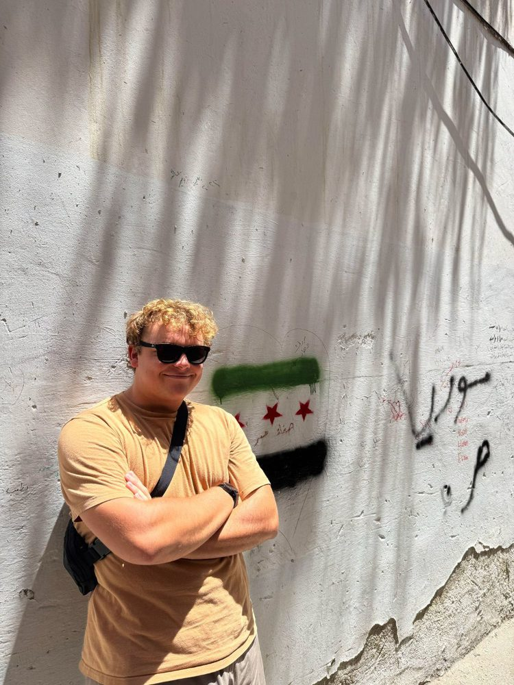
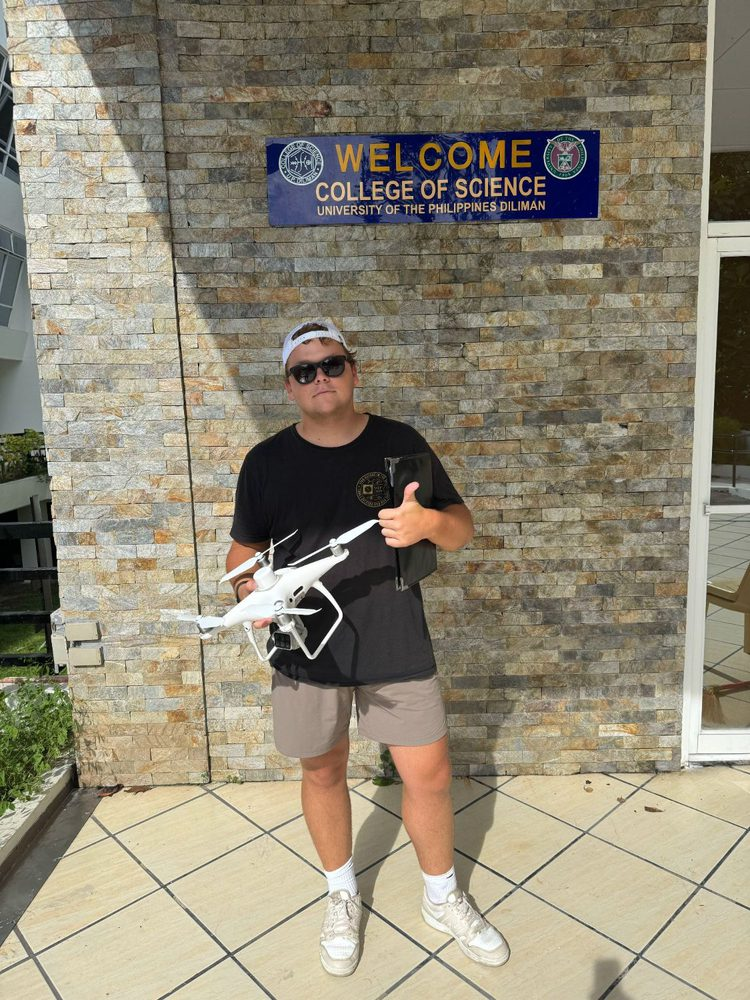

Hi, I'm Nico. French, Croatian and American, living in Washington, DC.
I work with satellite and drone data, mostly on farms and the environment.
I run Open Farm Analytics, a nonprofit that sends farmers practical advice from satellite data. Our first program was in Kenya.
Cal Poly San Luis Obispo: environmental geography, global politics and Spanish. Now Georgetown, master's in foreign service, focused on science and technology.
English, French and Spanish. Learning Arabic.
Off the clock: trips somewhere off the map, geography competitions, small hands-on projects.
Flights
0Flights
0Countries
0Cities
0Miles
All places



